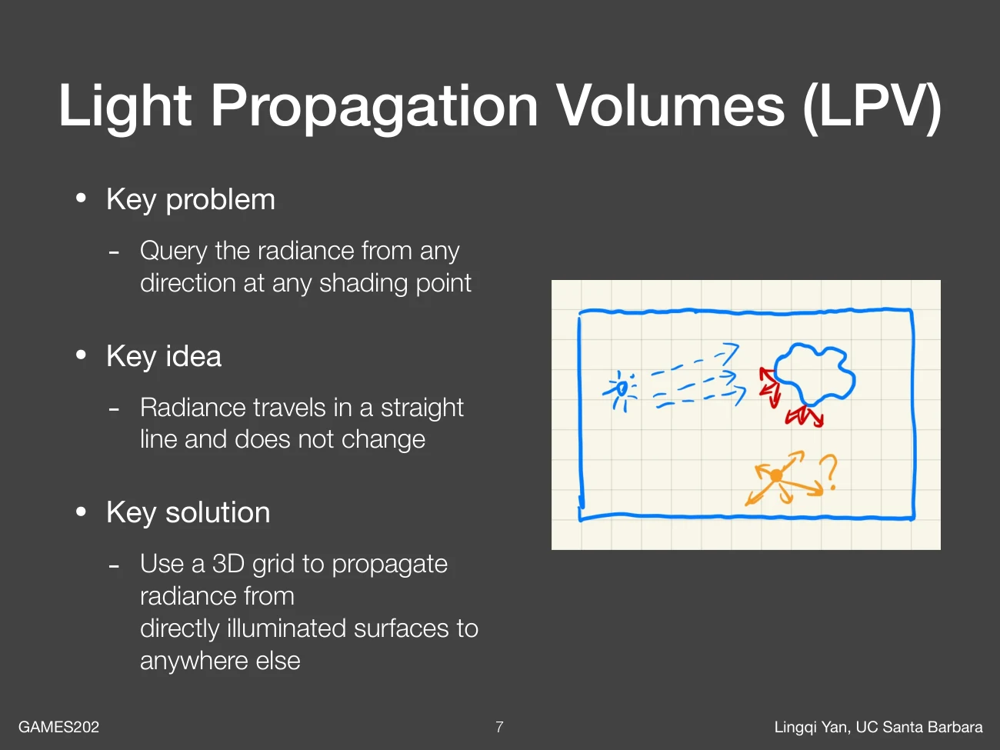
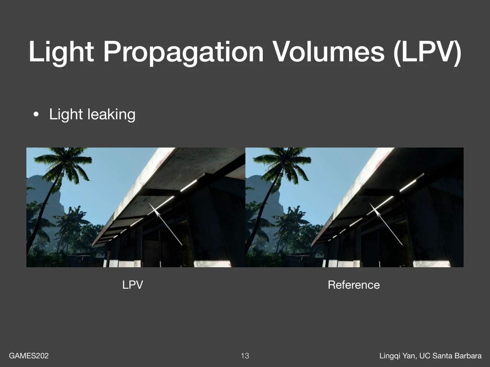
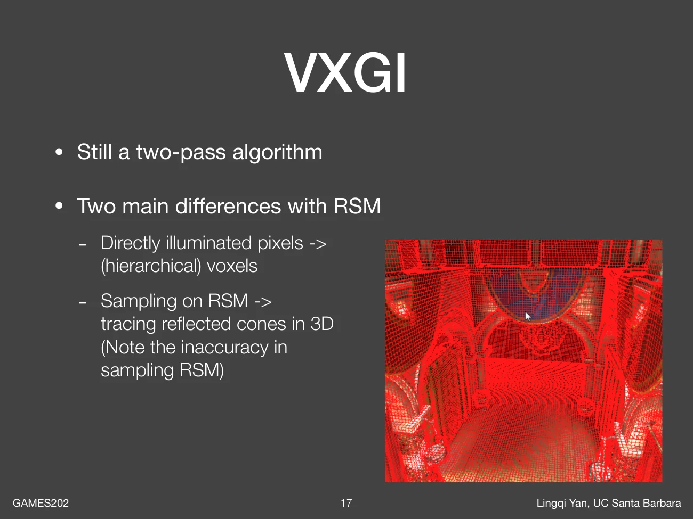
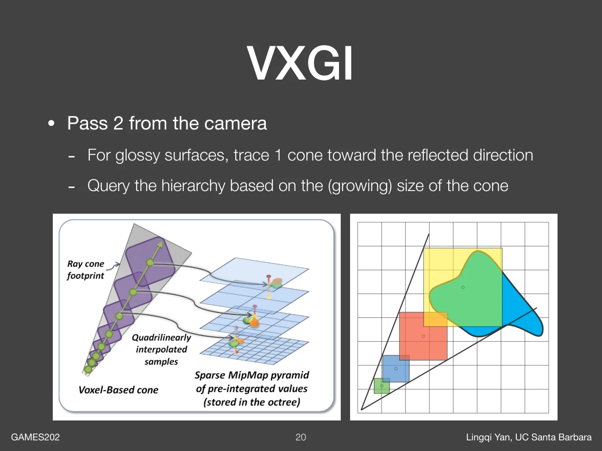
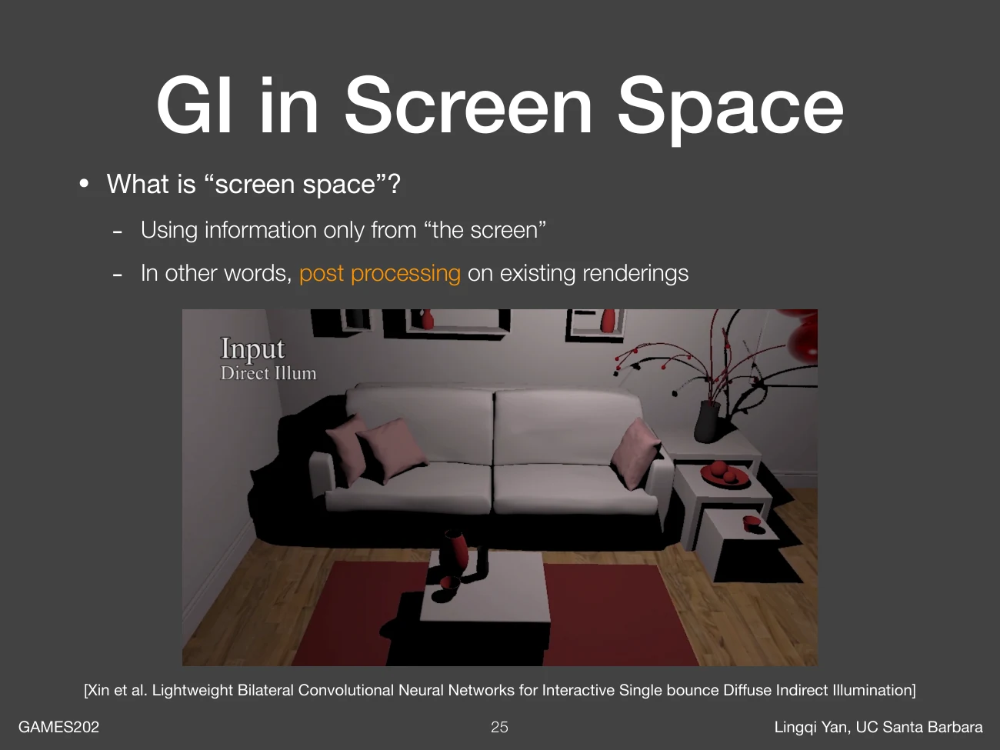
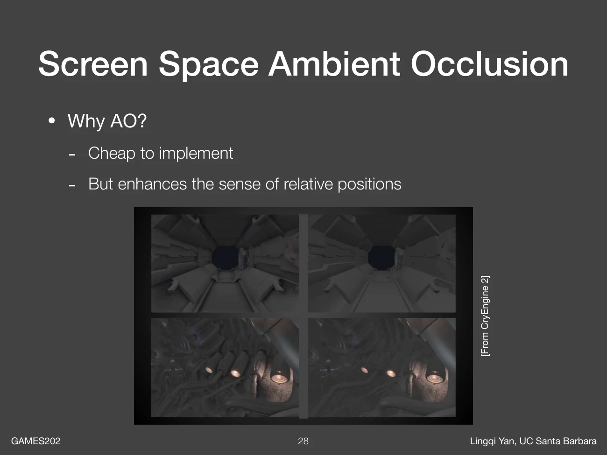
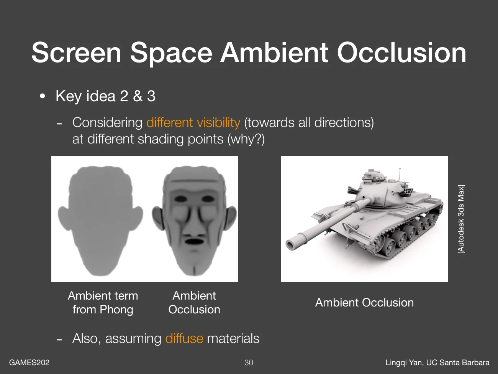
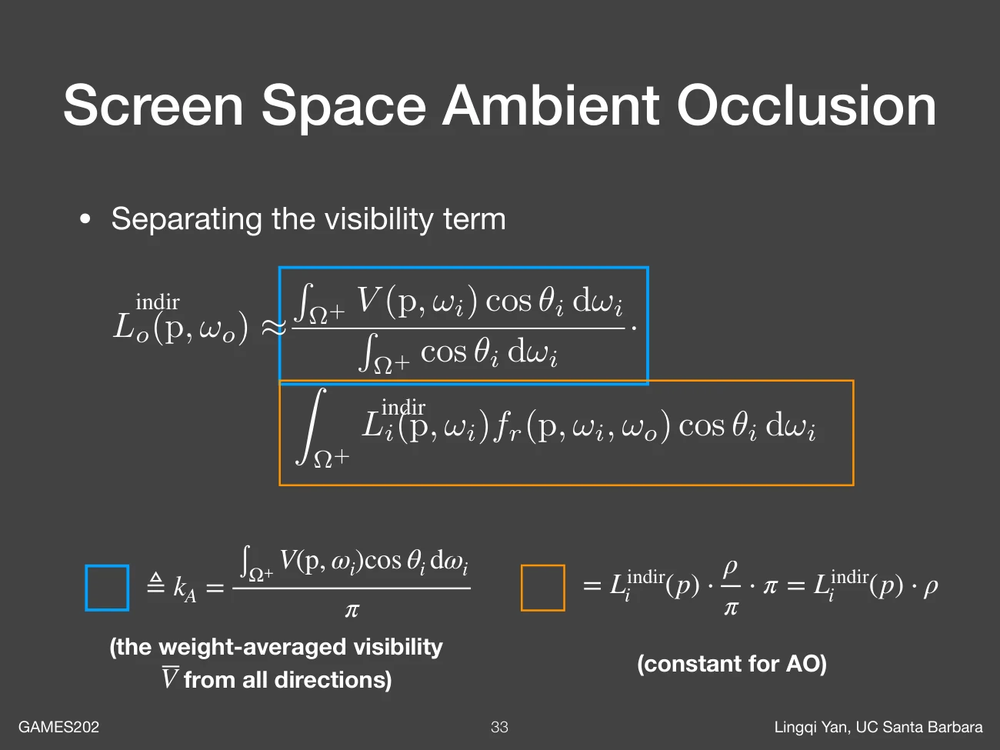
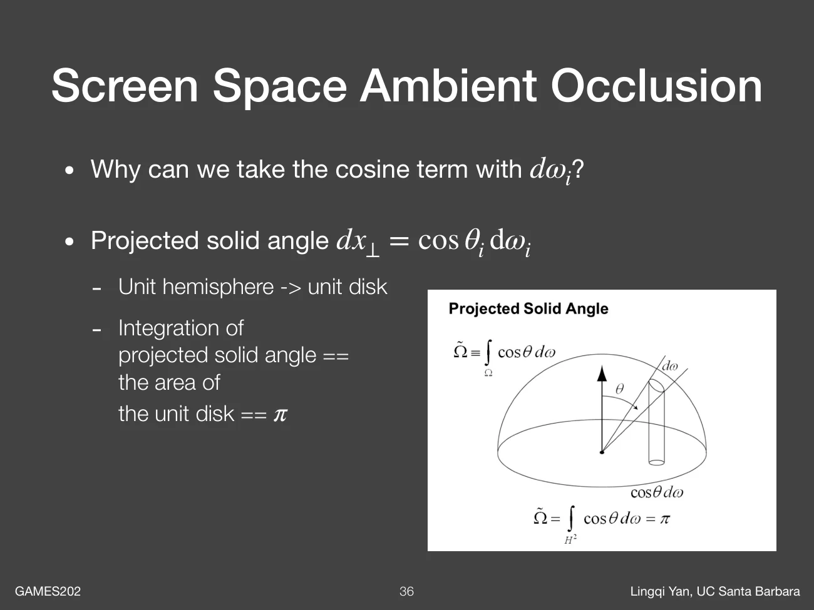
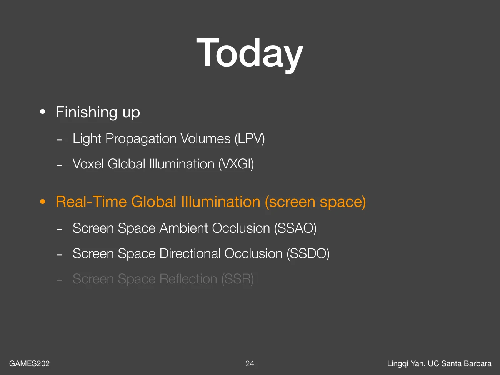

第 8 讲：实时全局光照（下）——LPV、VXGI 与屏幕空间环境光遮蔽
从三维体素传播到屏幕空间后处理：实时全局光照的两条工程路线与 SSAO 的近似推导
◆ 学完这一讲，你应该能
能说出 LPV 的四个步骤（生成、注入、传播、渲染）以及它为什么会产生漏光
能解释 VXGI 与 RSM 的两个关键区别，以及它如何用锥体追踪做 glossy 和 diffuse 查询
能说明“屏幕空间”的含义：只用已有渲染结果做后处理，并理解其固有局限
能从渲染方程出发推导 SSAO 的近似公式，说明为什么可以把余弦项和可见性项放在一起积分
能在 UE/Unity 中找到 SSAO、SSR 等屏幕空间效果的对应设置，并判断何时该用、何时会出问题
核心结论速记
LPV 用三维网格传播辐照度：先把直接光照表面当作虚拟光源注入网格（用一阶 SH 存方向分布），再逐格向邻居传播直到稳定，最后着色时查所在格子的入射辐照度。
LPV 的核心假设是“辐照度沿直线传播且不衰减”，这导致光会穿过遮挡物——即漏光（light leaking），是它的致命缺陷。
VXGI 把场景体素化并建层次结构，从光源 Pass 存每个体素的入射与法线分布，从相机 Pass 沿反射方向追踪锥体，按锥体大小查询对应层级的体素。
VXGI 对 glossy 表面追踪一个锥体，对 diffuse 表面追踪多个锥体（如 8 个），效果接近光线追踪，但仍有体素化带来的精度问题。
“屏幕空间”指只用屏幕上已有的信息（颜色、深度、法线）做后处理，因此看不到屏幕外的物体，会产生边缘缺失、拖影等问题。
SSAO 把间接光近似为常数，把渲染方程拆成“常数项 × 可见性积分”，可见性积分就是环境光遮蔽（AO），用屏幕空间深度采样来估计。
SSAO 中可以把余弦项和可见性放在一起积分，是因为投影立体角（projected solid angle）在整个半球上的积分等于单位圆盘面积 π，归一化后正好是加权平均可见性。
SSAO 的近似在“入射光为常数且材质为漫反射”时是准确的，这也是它只适用于间接光低频部分的原因。
011. LPV：用三维网格把光“扩散”出去
光传播体积（Light Propagation Volumes, LPV）最早在 CryEngine 中引入，特点是性能快、质量尚可。它要解决的核心问题是：在任意着色点、任意方向上查询辐照度。直接光照好算，但间接光需要知道从四面八方来的光，这本来是个全局问题。
LPV 的关键假设非常朴素：辐照度沿直线传播且不改变。也就是说，光从被直接照亮的表面出发，沿直线走到别处，强度不变。基于这个假设，它用一个三维网格把辐照度从直接光照表面“传播”到整个场景。
具体分四步：
- 生成（Generation）：找出直接被照亮的表面。最简单的方法就是复用上一讲的反射阴影图（Reflective Shadow Maps, RSM），也可以只用一部分漫反射面片作为“虚拟光源”。
- 注入（Injection）：把场景预划分成三维网格，对每个格子找出落在里面的虚拟光源，把它们的辐照度方向分布加起来，投影到一阶球谐（SH）上（共 4 个系数）。一阶 SH 只能表示一个方向性的“大瓣”，这已经够用了。
- 传播（Propagation）：对每个格子，收集来自六个面的辐照度，求和后再用 SH 表示，重复若干次直到体积稳定。这相当于让光在网格里一步步扩散。
- 渲染（Rendering）：对任意着色点，找到它所在的格子，取出该格子从各个方向来的入射辐照度，代入着色。
问题出在第四步：看图中点 p，它和光源之间其实有遮挡物，但 LPV 的传播不检查遮挡，光直接穿过去了——这就是漏光（light leaking）。课件用 LPV 与参考图的对比展示了这一点：参考图里该暗的地方，LPV 被照亮了。漏光是 LPV 的固有缺陷，因为它的传播只发生在网格邻居之间，没有可见性判断。


补充说明
LPV 的“注入—传播—查询”三段式是很多体素 GI 方法的共同骨架，记住这个骨架比记住细节更有用。
常见坑
漏光严重 → 因为传播不检查可见性，光穿过了遮挡物 → 缓解办法是减小网格步长、增加传播次数限制，或在注入阶段剔除被遮挡的虚拟光源，但无法根除。
网格分辨率太低 → 光斑呈块状、方向分布失真 → 提高三维网格分辨率，代价是内存和传播开销上升。
一阶 SH 只能表示单个方向瓣 → 一个格子里有多个方向的光源时方向信息被平均掉 → 这是 LPV 的精度上限，需要更高质量时改用 VXGI 等方法。
UE / Unity 落地
UE 早期版本有过 LPV 实现（Light Propagation Volume），可在项目设置中启用；现代 UE 默认使用 Lumen，LPV 已不是主流。
Unity 没有内置 LPV，但理解其“网格传播”思想有助于理解体素 GI 类插件和 Lumen 的辐照度缓存。
022. VXGI：体素化场景 + 锥体追踪
体素全局光照（Voxel Global Illumination, VXGI）仍然是两趟（two-pass）算法，和 RSM 同属“从光源出发、再从相机出发”的结构，但有两个关键区别：
- 直接光照的载体不同：RSM 存的是被直接照亮的像素，VXGI 存的是（分层的）体素。
- 查询方式不同：RSM 是在一张图上采样，VXGI 是在三维中追踪反射锥体（cone tracing）。课件特别指出，在 RSM 上采样本身就不准确，VXGI 用锥体追踪来改善这一点。
VXGI 的流程：
- 体素化整个场景，并建立层次结构（类似 mipmap 的体素层级），这样可以用不同精度查询不同大小的区域。
- 从光源的 Pass：在每个体素里存入射辐照度的分布和法线分布，并沿层次结构向上更新（父节点汇总子节点）。
- 从相机的 Pass：对 glossy 表面，沿反射方向追踪一个锥体，锥体越走越粗，就按锥体当前大小去查询对应层级的体素；对 diffuse 表面，则追踪多个锥体（例如 8 个）来覆盖整个半球。
这样做的效果相当好，课件展示的结果已经接近光线追踪。原因在于锥体追踪天然地做了“区域查询”：锥体越远越粗，正好用低层级体素来近似，既省采样又减少噪声。代价是体素化带来的精度损失（薄物体、小细节容易丢失）以及内存开销。
和 LPV 对比：LPV 传播的是方向性辐照度但不管遮挡，VXGI 查询时锥体追踪会碰到体素中的遮挡信息，所以漏光问题好得多，但体素化本身仍会让光“穿过”比体素更薄的遮挡物。


补充说明
锥体追踪的核心直觉：锥体越远越粗，正好对应体素层级越粗，这是一种“用精度换效率”的自适应查询。
常见坑
薄物体丢失间接光或漏光 → 体素分辨率不足，薄于一个体素的遮挡物被忽略 → 提高体素分辨率或对薄物体特殊处理。
锥体追踪出现块状伪影 → 体素层级查询的插值不够平滑 → 在层级间做三线性插值，或增加锥体数量。
性能骤降 → 体素化整个场景和建层次结构开销大 → 限制体素化范围（如只覆盖相机附近），或降低层级深度。
UE / Unity 落地
UE 的 Lumen 在概念上继承了“场景体素化 + 追踪”的思路（其 Surface Cache 与体素追踪有相似之处），但实现更复杂；VXGI 本身是 NVIDIA 的独立方案，UE 并未内置。
Unity 的 HDRP 有屏幕空间 GI，但没有内置 VXGI；理解 VXGI 有助于评估第三方体素 GI 插件的质量。
033. 什么是“屏幕空间”：只用已经渲染出来的画面
屏幕空间（screen space）这个词在实时渲染里出现频率极高，它的意思很直接：只使用“屏幕”上已有的信息。换句话说，就是在已经渲染好的画面上做后处理（post processing）。这些信息通常包括颜色缓冲、深度缓冲、法线缓冲（G-buffer）。
这样做的好处是：不需要场景的完整三维表示，不需要预计算，直接对当前帧的图像操作，实现简单、性能好、能处理动态场景。代价是：屏幕外的信息完全看不到。一个物体在屏幕外，它的反射、遮蔽、间接光都不会被计算；被遮挡的物体也不会贡献信息。这会导致边缘缺失、拖影、物体一转镜头效果就变等经典问题。
课件用一张图说明：屏幕空间 GI 就是在已有渲染结果上做后处理，把直接光照的结果“加工”出间接光的感觉。
这一讲接下来要讲的三个技术——SSAO、SSDO、SSR——都属于屏幕空间 GI。它们的共同套路是：用深度缓冲重建每个像素的三维位置和法线，然后在屏幕空间里采样邻居，估计可见性、方向性或反射。因为只依赖屏幕信息，它们都便宜、都能实时，但也都有屏幕空间固有的局限。

补充说明
判断一个技术是不是“屏幕空间”，就看它的输入是否只有当前帧的屏幕缓冲。
常见坑
物体在屏幕边缘时效果突然消失或闪烁 → 因为屏幕外没有信息 → 这是屏幕空间方法的固有限制，只能靠扩大采样范围或混合世界空间方法缓解。
深度缓冲精度不足导致重建位置错误 → 深度值非线性、远处精度低 → 使用线性化深度或高精度深度缓冲。
UE / Unity 落地
UE 的后处理体积（Post Process Volume）里可以开关 SSAO、SSR 等屏幕空间效果，它们都依赖 G-buffer（深度、法线）。
Unity 的 URP/HDRP 中，SSAO 是 Renderer Feature 或 Volume Override，同样依赖深度与法线纹理。
044. SSAO 的动机：用可见性补上缺失的间接光
屏幕空间环境光遮蔽（Screen Space Ambient Occlusion, SSAO）同样最早由 Crytek 引入。先问为什么需要 AO：它实现便宜，但能显著增强物体相对位置的感知——角落、缝隙、物体接触处变暗，人眼立刻觉得“这些东西是放在一起的”。课件展示了开启 AO 前后的对比，暗部让空间关系更清楚。
SSAO 是什么？它是全局光照的一种近似，而且是在屏幕空间做的。关键思路是：我们根本不知道入射的间接光长什么样，那就假设它是常数——对所有着色点、所有方向都一样。这个假设听着耳熟吗？是的，就是之前讲过的“把入射光提出来”的近似。
但只有常数入射光还不够。如果所有点接受到的间接光都一样，画面会显得平。真正让 AO 有意义的是：不同着色点朝向各个方向的可见性不同。墙角处的点，很多方向被墙挡住，能接收到的间接光就少；开阔处的点，各个方向都通，接收到的间接光就多。所以，在常数入射光的前提下，间接光的差异完全来自可见性差异。
课件把 Phong 模型里的环境项拆开：原来的环境项是常数，而环境光遮蔽则是把这个常数乘以一个可见性因子。此外还假设材质是漫反射的（diffuse），这样 BRDF 也是常数，可以一并提出来。
于是 SSAO 的定位就清楚了：它不计算真正的间接光颜色，只计算一个“有多少光能到达”的系数，乘上一个假设的常数环境光。这就是为什么 SSAO 看起来总是灰灰的、只影响明暗不影响颜色。


补充说明
记住这个逻辑链：不知道间接光 → 假设为常数 → 差异只来自可见性 → 算可见性就是 AO。
常见坑
把 SSAO 当成真正的 GI → 它只乘一个常数环境光，没有颜色和方向信息 → 需要彩色间接光时应使用 SSGI 或 Lumen 等方案。
AO 过强导致画面脏 → 可见性因子被过度放大 → 调低 AO 强度，或对 AO 结果做模糊。
UE / Unity 落地
UE 的后处理体积中有 Ambient Occlusion 分区，可调 Intensity、Radius、Power 等，底层就是 SSAO 类算法。
Unity 的 URP 有 SSAO Renderer Feature，HDRP 有 Ambient Occlusion Volume Override，参数含义类似。
055. SSAO 的推导：把渲染方程拆成“常数 × 可见性积分”
一切还是从渲染方程出发： \[ L_o(p,\omega_o) = \int_{\Omega^+} L_i(p,\omega_i) f_r(p,\omega_i,\omega_o) V(p,\omega_i) \cos\theta_i \, d\omega_i \]
这里只关心间接光部分。用实时渲染里常用的“拆分近似”：把被积函数拆成两部分分别积分再相乘，即 \[ \int_\Omega f(x)g(x)\,dx \approx \int_\Omega f(x)\,dx \cdot \int_\Omega g(x)\,dx \] 前提是其中一个函数在另一个函数的支撑集内变化不大。
在 SSAO 中，令 \(G = L_i \cdot f_r\)，即入射光乘 BRDF。由于假设入射光是常数、材质是漫反射（\(f_r = \rho/\pi\) 也是常数），\(G\) 就是常数，满足“变化不大”的条件，近似是准确的。于是： \[ L_o^{indir}(p,\omega_o) \approx \frac{\rho}{\pi} \cdot L_i^{indir}(p) \cdot \int_{\Omega^+} V(p,\omega_i)\cos\theta_i \, d\omega_i \]
注意积分项 \(\int_{\Omega^+} V(p,\omega_i)\cos\theta_i \, d\omega_i\) 就是加权平均可见性，记作 \(k_A\)，也就是 AO 项。它衡量的是：从该点看出去，半球上被遮挡的比例（按余弦加权）。
课件还进一步解释了为什么可以把余弦项和可见性放在一起积分：因为 \(\cos\theta_i \, d\omega_i\) 就是投影立体角（projected solid angle）\(d x_\perp\)。单位半球映射到单位圆盘，投影立体角在整个半球上的积分正好等于单位圆盘的面积 \(\pi\)。所以 \(k_A\) 除以 \(\pi\) 就是一个归一化的加权平均可见性，取值范围在 0 到 1 之间。
还有一个更简单的理解方式：入射光 \(L_i\) 是常数，漫反射 BRDF \(f_r = \rho/\pi\) 也是常数，两者都可以直接提出积分号： \[ L_o(p,\omega_o) = \frac{\rho}{\pi} \cdot L_i(p) \cdot \int_{\Omega^+} V(p,\omega_i)\cos\theta_i \, d\omega_i \] 和上面的结果完全一致。这就是 SSAO 的全部理论。


补充说明
拆分近似（split-sum approximation）在实时渲染里反复出现，SSAO 是它最干净的应用之一。
常见坑
忘记除以 π 做归一化 → AO 值超出 [0,1]，画面过暗或过亮 → 记住 k_A 要除以 π 才是加权平均可见性。
认为拆分近似总是准确 → 只有当 G（入射光 × BRDF）在可见性支撑集内近似常数时才准确 → 对于高频入射光（如点光源直接光）不适用，所以 SSAO 只用于间接光。
把投影立体角当成普通立体角 → 余弦加权被忽略，AO 分布错误 → 采样时要用余弦加权或对采样方向做余弦分布。
UE / Unity 落地
UE 的 SSAO 实现内部就是采样深度、重建位置、估计可见性，再乘到环境光上；参数 Radius 对应采样半球半径。
Unity 的 SSAO 同样基于深度法线重建，Shader 中会做余弦加权采样。
SSAO 可见性估计的伪代码（屏幕空间采样）（hlsl）
float ao = 0;
for (int i = 0; i < N; ++i) {
float3 dir = sampleCosineWeightedHemisphere(i); // 余弦加权采样方向
float3 pos = reconstructPosition(uv, depth); // 从深度重建世界位置
float3 samplePos = pos + dir * radius; // 在半球内取一个点
float3 sampleUV = projectToScreen(samplePos); // 投影回屏幕
float sampleDepth = texture(depthTex, sampleUV);
float sampleZ = linearizeDepth(sampleDepth);
ao += (sampleZ < samplePos.z) ? 0.0 : 1.0; // 被遮挡则贡献 0
}
ao /= N; // 得到加权平均可见性 k_A / π
066. 从 SSAO 到 SSDO 与 SSR：屏幕空间 GI 的全景
SSAO 只回答了“有多少间接光能到达”，没有回答“从哪个方向来”。屏幕空间方向性遮蔽（Screen Space Directional Occlusion, SSDO）在此基础上进一步：它不仅估计可见性，还利用屏幕空间信息估计间接光的方向性，从而能产生带颜色的间接光（比如红墙旁边的白球会染上红色）。课件在本讲没有展开 SSDO 的细节，但给出了它在屏幕空间 GI 谱系中的位置。
屏幕空间反射（Screen Space Reflection, SSR）则解决另一个问题：光滑表面的反射。它用深度缓冲做射线步进（ray marching），在屏幕空间里找反射光线打到的东西。SSR 能做出很真实的镜面反射，但同样受屏幕空间限制：反射光线走出屏幕就没了，被遮挡的物体也反射不出来。下一讲会详细讲 SSR，本讲只是把它列在“屏幕空间 GI”的清单里。
把这三个技术放在一起看，屏幕空间 GI 的共同模式是：
- 输入只有当前帧的 G-buffer（颜色、深度、法线）；
- 在屏幕空间做采样或射线步进；
- 结果作为后处理叠加到直接光照上；
- 都受“看不到屏幕外”的限制。
它们的优点是实现简单、性能好、支持动态场景；缺点是无法处理屏幕外信息，且质量受屏幕分辨率和深度精度影响。工程上通常把它们作为“锦上添花”的效果，而不是全局光照的唯一来源。

补充说明
屏幕空间 GI 三件套的分工：SSAO 管明暗、SSDO 管颜色方向、SSR 管镜面反射。
常见坑
认为 SSR 能反射屏幕外物体 → 不能，反射光线走出屏幕就失效 → 需要混合立方体贴图或屏幕空间外的 fallback。
SSDO 产生颜色渗漏但方向错误 → 屏幕空间信息不完整 → 这是方法固有限制，只能靠混合世界空间方法缓解。
UE / Unity 落地
UE 的后处理体积中有 Screen Space Reflections 分区，可调质量、最大粗糙度等；SSDO 在 UE 中没有直接对应，但 Lumen 的屏幕空间追踪部分概念相近。
Unity 的 HDRP 有 Screen Space Reflection Volume Override；URP 的 SSR 需要额外配置。
引擎对照表
| 概念 / 效果 | Unreal Engine | Unity |
|---|---|---|
环境光遮蔽 | Post Process Volume → Ambient Occlusion（Intensity/Radius/Power） | URP SSAO Renderer Feature / HDRP Ambient Occlusion Volume Override |
屏幕空间反射 | Post Process Volume → Screen Space Reflections | HDRP Screen Space Reflection Volume Override |
体素全局光照 | 无内置 VXGI；Lumen 的 Surface Cache 概念相近 | 无内置，需第三方插件 |
光传播体积 | 早期版本有 Light Propagation Volume 选项，现代 UE 默认 Lumen | 无内置 |
屏幕空间 GI 的输入 | G-buffer（Scene Depth、World Normal） | Depth Texture、Normal Texture（需在管线中开启） |
术语双语表
| English | 中文 | 说明 |
|---|---|---|
| Light Propagation Volumes (LPV) | 光传播体积 | 用三维网格把直接光照的辐照度传播到整个场景，不检查遮挡，会漏光。 |
| Voxel Global Illumination (VXGI) | 体素全局光照 | 体素化场景并建层次结构，用锥体追踪查询间接光。 |
| Cone Tracing | 锥体追踪 | 沿方向追踪一个逐渐变粗的锥体，按锥体大小查询对应层级的体素。 |
| Screen Space Ambient Occlusion (SSAO) | 屏幕空间环境光遮蔽 | 假设间接光为常数，用屏幕空间深度采样估计加权平均可见性。 |
| Screen Space Directional Occlusion (SSDO) | 屏幕空间方向性遮蔽 | 在 SSAO 基础上估计间接光方向性，能产生带颜色的间接光。 |
| Screen Space Reflection (SSR) | 屏幕空间反射 | 用深度缓冲做射线步进，在屏幕空间找反射光线击中的物体。 |
| Projected Solid Angle | 投影立体角 | 余弦加权的立体角，单位半球映射到单位圆盘，总积分为 π。 |
| Split-Sum Approximation | 拆分近似 | 把积分拆成两个积分相乘，前提是其中一个函数近似常数。 |
| Light Leaking | 漏光 | 光穿过遮挡物照亮本应黑暗的区域，是 LPV 等方法的典型缺陷。 |
| Reflective Shadow Maps (RSM) | 反射阴影图 | 把直接光照像素当作虚拟光源，是 LPV 和 VXGI 的输入来源。 |
课后练习
01 LPV 的四个步骤分别是什么？为什么它会产生漏光？
查看答案
提示：
从“生成、注入、传播、渲染”四步回答，漏光与传播过程是否检查遮挡有关。
四步：1）生成——用 RSM 等方法找出直接光照表面作为虚拟光源；2）注入——把虚拟光源的方向辐照度分布投影到一阶 SH 并存入三维网格；3）传播——每个格子收集六个邻居面的辐照度，求和再用 SH 表示，重复直到稳定；4）渲染——着色点查所在格子的入射辐照度。漏光原因：传播只在网格邻居间进行，不检查遮挡，光会穿过墙壁等遮挡物照亮本应黑暗的区域。
02 VXGI 与 RSM 的两个主要区别是什么？VXGI 对 glossy 和 diffuse 表面分别如何查询？
查看答案
提示：
区别在“直接光照的载体”和“查询方式”；查询方式与锥体数量有关。
两个区别：1）RSM 存直接光照像素，VXGI 存分层体素；2）RSM 在图上采样，VXGI 在三维中追踪反射锥体。查询：对 glossy 表面沿反射方向追踪一个锥体，锥体越远越粗，按大小查询对应层级的体素；对 diffuse 表面追踪多个锥体（如 8 个）覆盖半球。
03 从渲染方程出发，推导 SSAO 的近似公式，并说明为什么可以把余弦项和可见性放在一起积分。
查看答案
提示：
先写出间接光部分的渲染方程，再用拆分近似，最后用投影立体角的性质解释。
间接光渲染方程：L_o = ∫ L_i f_r V cosθ dω。假设 L_i 为常数、材质为漫反射 f_r = ρ/π 为常数，用拆分近似 ∫ fg ≈ ∫f · ∫g，令 G = L_i f_r 为常数，则 L_o ≈ (ρ/π) · L_i · ∫ V cosθ dω。积分项 ∫ V cosθ dω 就是加权平均可见性 k_A。可以把余弦项和可见性放在一起，是因为 cosθ dω 就是投影立体角 d x_⊥，单位半球映射到单位圆盘，投影立体角在整个半球上的积分等于圆盘面积 π，所以 k_A/π 是归一化的加权平均可见性。
04 在 UE 或 Unity 中开启 SSAO 后，为什么物体边缘会出现一圈暗边？这是 bug 吗？
查看答案
提示：
考虑屏幕空间方法的信息来源和深度采样。
不是 bug，是 SSAO 的固有限制。SSAO 只用屏幕空间深度信息估计可见性，在物体边缘处，采样点可能落在背景上，深度差异被误判为遮挡，于是产生暗边（halo）。缓解方法：调整采样半径、对 AO 结果做模糊、使用双边滤波保留边缘，或在深度不连续处降低 AO 强度。
05 实践题：在 UE 中创建一个角落场景（两面墙 + 地面），分别关闭和开启 SSAO，观察画面差异；然后调大 Radius 和 Intensity，记录变化并解释原因。
查看答案
提示：
关注角落和物体接触处的明暗变化。
关闭 SSAO 时角落和接触处与开阔处亮度相同，空间关系不明显；开启后角落变暗，物体显得“落地”。调大 Radius 会让更大范围内的遮挡被计入，暗区扩大但可能变脏；调大 Intensity 会加深暗部，过大会显得不自然。原因是 SSAO 估计的是加权平均可见性，半径决定采样半球大小，强度决定 AO 项在最终着色中的权重。